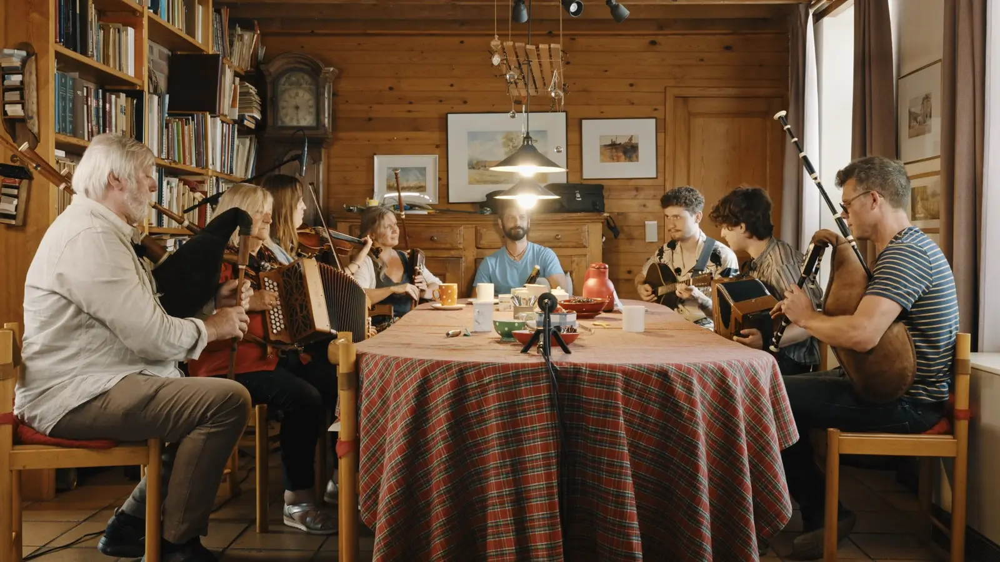
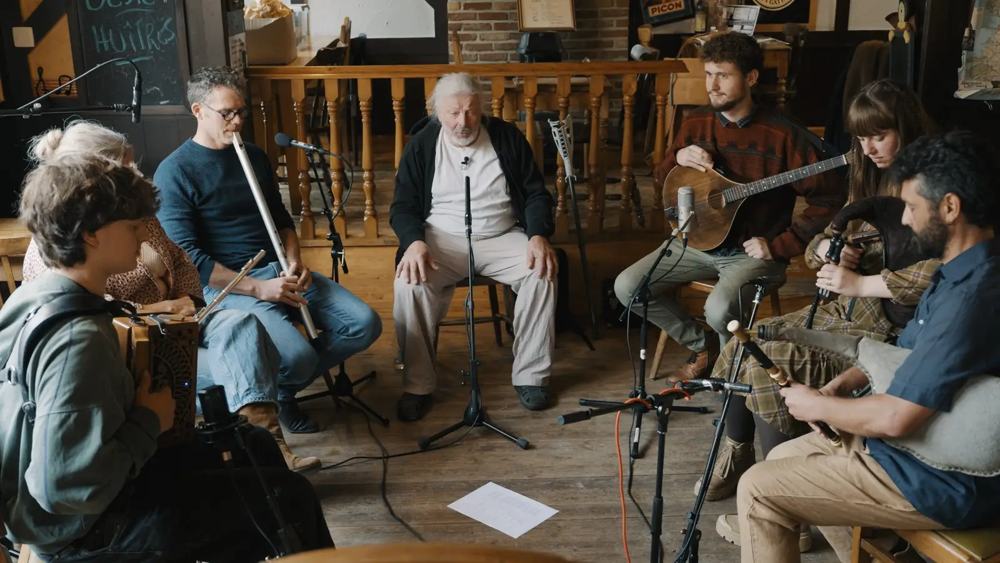
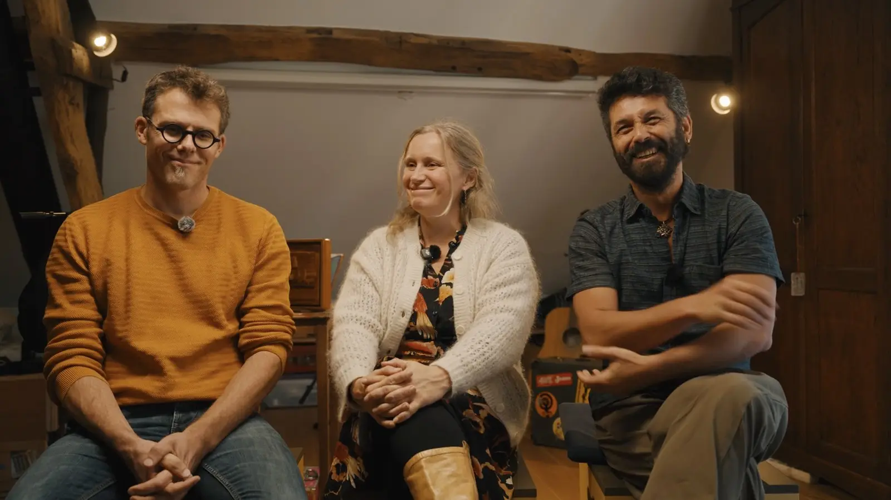
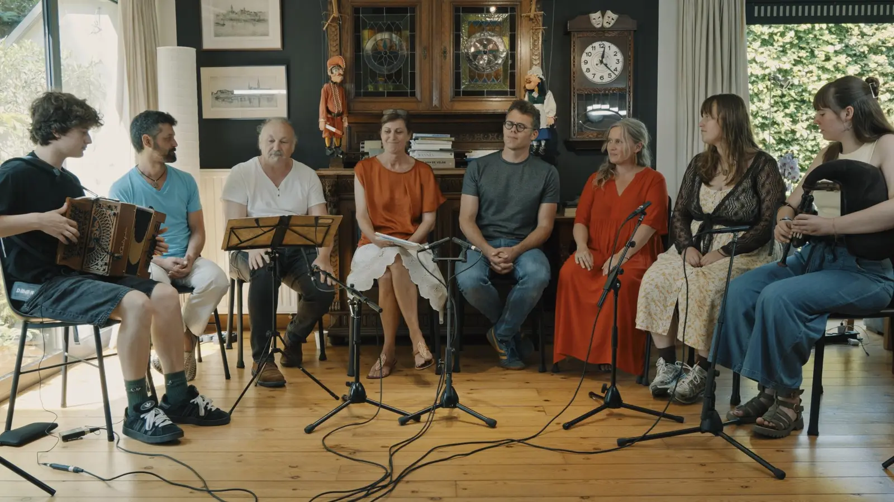
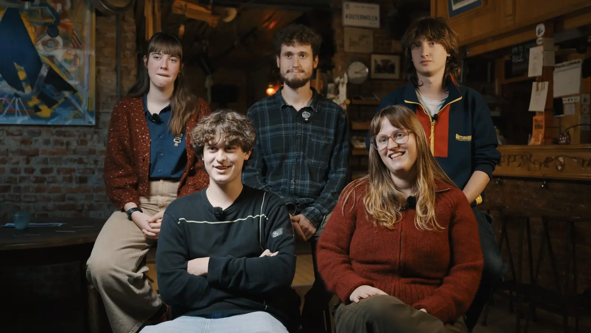
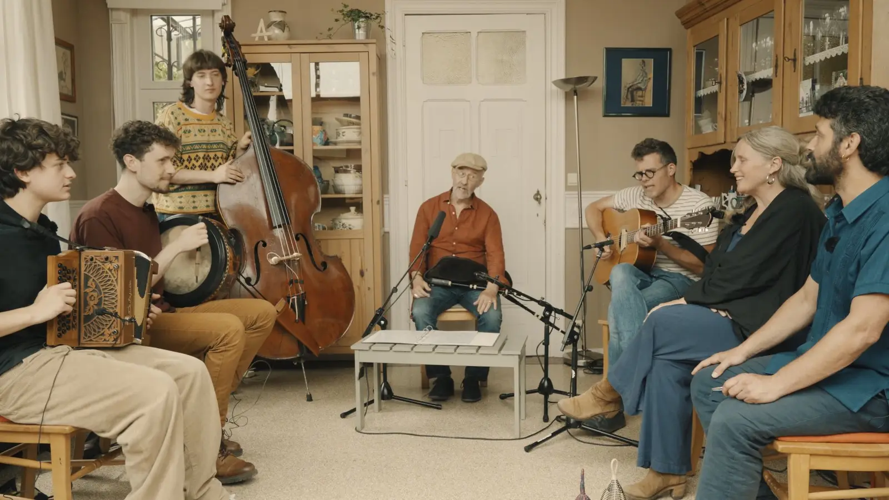

Echo
Echo réunit trois générations de folk : quelques pionniers qui ont façonné le renouveau folk belge dans les années soixante et septante, Griff Trio, qui est allé à leur rencontre, et des jeunes d'une vingtaine d'années issus de la scène folk actuelle qui se sont assis à leur table et ont joué avec eux.
Ces pionniers — Hubert Boone, Herman & Rosita Dewit, Marc Malempré, Alfred Den Ouden et Marc Hauman & Ann Heynen — ont fait en sorte que la cornemuse, l'accordéon et la vielle à roue résonnent encore aujourd'hui. Les rencontres ont été filmées et constituent la base d'un docu-concert où documentaire et musique live se fondent l'un dans l'autre. Un hommage aux pionniers d'hier, et au folk de demain.
Griff Trio est un trio folk éclectique qui confronte tradition et avant-garde. Avec des voix, des cornemuses et des flûtes, il construit un univers sonore singulier où mélodies anciennes et idées nouvelles se rejoignent. Griff Trio, ce sont Raphaël De Cock (chant, whistle, uilleann pipes), Rémi Decker (chant, whistle, pastoral pipes) et Liesbet Marivoet (chant, flûte traversière, cornemuse).
Les jeunes d'Echo sont Laris D'Hose (basse), Pepijn De Pauw (accordéon), Tiemen Kreupeling (bodhrán, violon, accordéon diatonique, bouzouki), Marie Temmerman (chant, violon, piano) et Hannelore Valentin (cornemuse, musette, flûte traversière, chant).
Documentaire de Gijs Debraekeleer, Griff Trio & Bert Huysentruyt.
Photos






En waar de ster bleef stille staan
Après le succès de leur conte autour de Wannes Raps, Reineke Van Hooreweghe et Toon Van Mierlo repartent avec la même équipe — cette fois avec Felix Timmermans. Dans En waar de ster bleef stille staan (1924), trois vagabonds déguisés en Rois mages vont de porte en porte à travers le paysage hivernal de la Campine. Ce qui commence comme une ruse pour obtenir à manger et un verre devient une histoire de pauvreté, de culpabilité et de grâce.
Une organisation de Westelfolk, Merodefestival et Griff Trio.